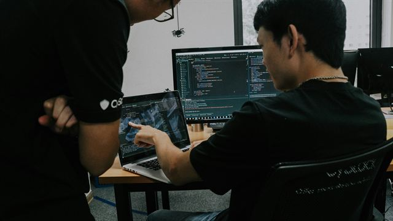

¿Por qué empezar a programar con Python?
Publicado el 10 de noviembre de 2026 por Carlos Medina.

«¿Con qué lenguaje empiezo?» es la pregunta que más nos hacen los alumnos nuevos. No hay una única respuesta, pero en Conquer Academy solemos recomendar Python. Te cuento por qué.
Se lee fácil y sirve para mucho
El código de Python se parece bastante al inglés. No hace falta poner punto y coma al final de cada línea y, donde JavaScript o Java usan llaves para abrir y cerrar un bloque, Python usa la sangría. Así te puedes centrar en aprender a resolver problemas, que es lo que más cuesta al principio.
Además, Python no se queda en los ejercicios de clase. Con él se programa la parte del servidor de muchas webs, se analizan datos y se automatizan tareas repetitivas. También es uno de los lenguajes más usados en inteligencia artificial. Como lo usa tanta gente, hay mucha documentación (la oficial tiene hasta un tutorial en español) y es fácil encontrar a alguien que ya tuvo el mismo error que tú.
Cómo empezar
Descarga Python desde python.org e instálalo. Después instala un editor de código. Nosotros usamos Visual Studio Code con la extensión de Python. Crea un archivo llamado hola.py, escribe print("Hola, mundo") y ejecútalo con el botón del triángulo que aparece arriba a la derecha. Si en la terminal sale «Hola, mundo», ya has escrito tu primer programa.